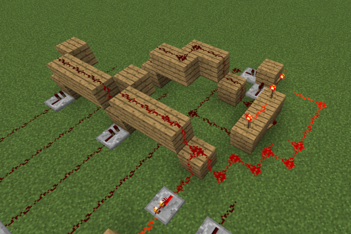
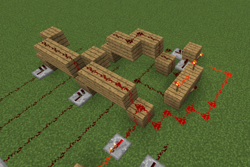

Redstone Projects
Introduction
If you've never heard of Minecraft, I'm impressed. Also, this page won't make a lot of sense. The most important thing to understand is that Minecraft is a sandbox game, almost like digital Legos. Minecraft has a material called "redstone" that can be used to create arbitrarily complex circuits, and many people have successfully built entire CPUs within the game. I've been playing Minecraft since I was 11, and ever since in-game console commands were added to the game, it has helped get me more interested in programming and more familiar with the basic principles of how computers work and process information. The way that redstone is implemented introduces many idiosyncrasies that are not present in real-world electronics that allow many things to be compacted in a way that does not mirror reality, but it is still perfectly feasible to translate a traditional circuit diagram into a redstone circuit in a more 1:1 way, and vice versa.
How Redstone Works
The foundation of redstone circuitry is the redstone torch. Redstone dust acts like a wire, and a torch serves as a 2nd-law-of-thermodynamics-defying infinite power source, which can be disabled by running a current into the block supporting it. This functionality effectively makes it a NOT gate. Redstone repeaters function as repeaters, diodes, and to add delay. Power comes in the back and is emitted at full strength out the front. Powering either side of a repeater locks its state, causing it to continue emitting whatever signal it was when the side became powered, and ignoring the input signal, making it a sort of memory cell. Using these three components, two repeaters can connect two "wires" without allowing the current to flow upstream to create an OR gate, which can then be fed into a redstone torch to create a NOR gate. A configuration of three torches and a piece of redstone dust can create and AND gate, and more complex redstone components allow for the creation of XOR gates, T-Flip Flops, and various latches. These can be chained together in mostly the same way they are in real life to create more elaborate circuitry.
My Binary Adder/Subtracter
After taking a course on digital logic, I decided use what I had learned to implement a binary adder with a 7-segment display in Minecraft. I used well-known designs for redstone logic gates to create a full adder, which I replicated three times to create a 4-bit adder. I later followed a redstone tutorial to upgrade my adder and allow it to subtract as well. I solved the Karnaugh maps for each of the seven segments of a 7-segment display, and created a decoder for each segment. I then connected the output of the adder to the input of the decoder, and the output of the decoder to the display. The result was a machine that could add and subtract small binary numbers, and display the result as a hex digit on a 7-segment display.
Having lost the original world file, I recently decided to try again to refresh my skills and see if I could improve on my original design. I was able to create a new adder that was somewhat faster, with a more elegant decoder design, shown below.
 
